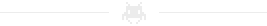
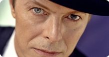
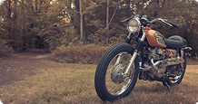
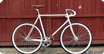

Обо мне
Привет! Меня зовут Иван Белобородов. Я родился и вырос в Ижевске, столице Удмуртской Республики. Последние несколько лет занимаюсь проектированием и дизайном мобильных приложений на базе iOS и Android. В данный момент живу в Москве и ищу постоянное место работы.
Испытываю страсть к девайсам, имеющим touch-интерфейс, классическим мотоциклам, немецкому пиву, английской музыке и французскому кино.
Опыт работы
-
Центр Высоких Технологий
UX Дизайнер
январь 2011 - июль 2013 -
ООО "БИТ-Мастер"
Дизайнер мобильных интерфейсов
август 2012 - июнь 2013 (ВНЕШТАТНО) -
Fastdev
Дизайнер мобильных интерфейсов
апрель 2012 - июнь 2012 (ВНЕШТАТНО) -
ООО "Танго Телеком"
Дизайнер веб и мобильных интерфейсов
сентябрь 2010 - январь 2011 (ВНЕШТАТНО) -
Фрилансер
Веб-дизайнер
март 2009 - январь 2011
Навыки
-
User Experience
с 2010 года -
Дизайн мобильных интерфейсов
с 2011 года -
Веб-интерфейсы
с 2010 года - Базовые знания HTML & CSS
- Клубный фотограф
- Интерфейсы для Smart TV
- 7 проектов в сфере такси за 3 года
Инструменты
| Balsamiq Mockups | август 2013 |
| Diablo III | 29 сентября |
| iA Writer | позавчера |
| Lightroom 4 | сентябрь 2013 |
| Skala Preview & View | вчера |
| Xcode | май 2013 |
Последние проекты
-
TaxiCaller
декабрь 2012 - март 2013 -
Check, please!
май 2013 - ... -
Izhevsk.ru
ноябрь 2012 - февраль 2013 -
RP.com
июнь 2012 - март 2013
Интересы
-
Музыка  -
Мотоциклы  -
Кулинария 
-
Велоспорт 